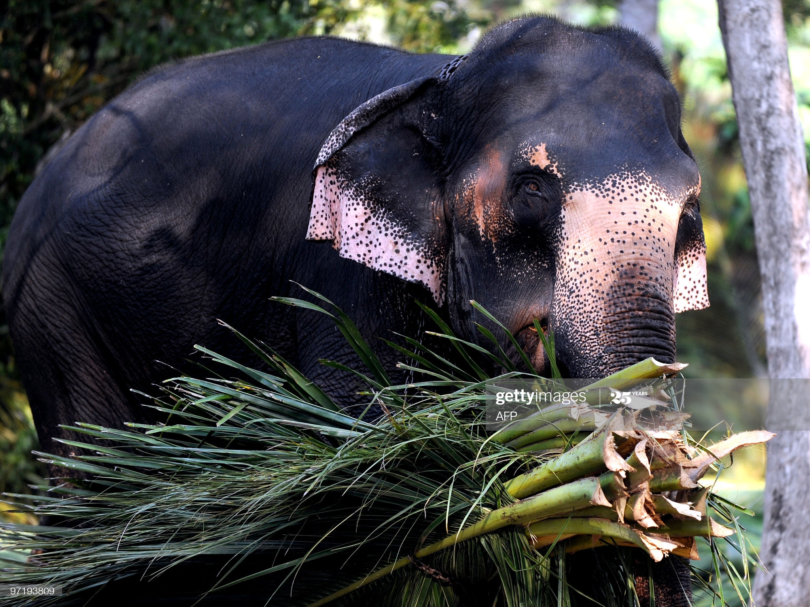

subspecies of the Asian elephant, and native to the Indonesia island of Sumatra. In 2011, the Sumatran elephant has been
classified as critically endangered by IUCN as the population has declined by at least 80% over the last three generations, estimated to be about 75 years.
The subspecies is pre-eminently threatened by habitat loss, degradation and fragmentation, and poaching; over 69% of potential elephant habitat has been lost within the last 25 years.
Much of the remaining forest cover is in blocks smaller than 250 km2 (97 sq mi), which are too small to contain viable elephant populations.
Due to conversion of forests into human settlements and agricultural areas, many of the Sumatran elephant
populations have lost their habitat humans.As a result, many elephants have been removed
the wild or directly killed. Between 1985 and 2007, 50% of Sumatran elephants died.[1] Between 1980
and 2005, 69% of potential Sumatran elephanT habitat was lost within just one elephant generation, and the driving
forces that caused this habitat loss still remain essentially unchecked. There is clear, direct evidence from two
provinces, Riau anLampung, which shows entire elephant populations have disappeared as a result of habitat loss
